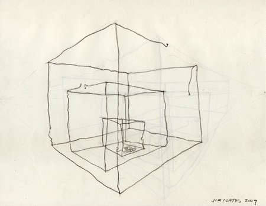

Schedule


Senior Seminar in
Literary Criticism and Theory
COURSE SCHEDULE HERE
Click on a date to jump to the page.

Go to archive
Entries
- Introduction
- Introduction 2
- Literary Theory / Theoretical Literature
- New Criticism
- Formalism Narratology
- Narratology
- Structuralism
- Semiotics
- Marx, the spot
- Marx II, the end is nigh?
- Psycho-analysis
- Psycho-analysis II
- Gender Studies 2
- Gender Studies 1
- Historicism, New Historicism
- The New Old Historicism
- The Postcolonial
- Colonizer and Colonized: When the 'twain meet
- Reader Response
- Respondez vous mon lecteur
- How to Bracket [D-](con)struction/s
- Posting the modern
- Was ist -- CompLit-- とは何か？
- Compared to what?
- Pop Cultural Studies
- Subculture: Subordinate/Constituent
- Theorizing Theory: The Impossible Project of Norton
- Antitheory
- 3Ds
- THE POSTMODERN: THE RETURN OF THE MARXIST CRITIQUE